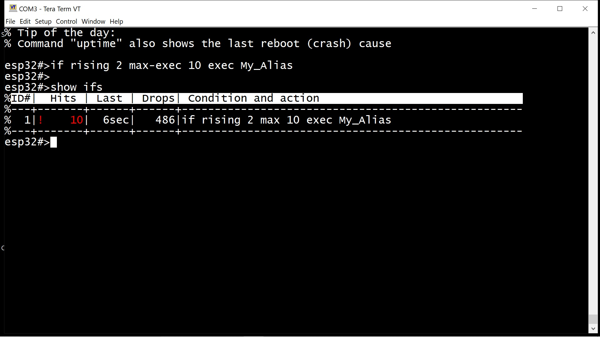

Aliases, or "command aliases", are a way to execute several shell commands at once, like a shell script—either explicitly using the "exec" command or indirectly as part of the "if" command. Aliases have names and are referred to by those names. You can think of them as named containers filled with commands—similar to ".sh" or ".bat" files, but stored in RAM.
Let's look at a simple home automation task: water pump control. This will give you a general understanding of the alias and event system. A full command list and additional details are provided later in the document.
You have a water tank with two sensors: GPIO2 for "Water Too Low" and GPIO4 for "Water Too High".
You have a water tank, with two sensors, GPIO2, for "Water Too Low" and another (GPIO4) is "Water Too High".
water in
<=========+
| | |
GPIO4 <-------------# | |
"Overflow" sens |~~~~~~~| |
| . o | |
| . . | |
GPIO2 <-------------# water | ###<------------- GPIO20, "Start"
"Too low!" sens | o . | # # WATER PUMP
|__ __| ###<------------- GPIO21, "Drive"
\ /
| |
water out

Fig. 1: Water Tank and Water Pump scheme
Sensors consist of two wires that are shorted by water in the tank. A HIGH level appears at the "sensor" output when water touches it, and it goes LOW when the water level drops below the sensor.
The water pump can be turned ON and OFF by toggling GPIO20 HIGH for 3 seconds, then toggling GPIO21 HIGH. GPIO20 is used to "start" the motor with a higher current, while GPIO21 allows the pump to run normally.
When the water reaches the upper sensor, GPIO4 voltage goes from LOW to HIGH. When the water drops below the lower sensor, GPIO2 voltage falls from HIGH to LOW.
How do you implement automatic pump control using shell commands?
First, let's create "motor_on" and "motor_off" aliases to control the motor:
esp32#>alias motor_on esp32-alias>The "alias motor_on" command creates a new alias named "motor_on". The shell enters alias editing mode, where any command you type is recorded as part of the alias:
esp32#>alias motor_on esp32-alias>pin 4 high delay 3000 low esp32-alias>pin 4 low 2 high esp32-alias>Hello World!
NOTE: To exit alias editing mode, use the "quit" command instead of "exit". This is because "exit" may be a valid command within the alias itself.
You can list the alias contents at any time using the "list" command:
esp32-alias>list % Alias "motor_on": % 1: pin 4 high delay 3000 low % 2: pin 2 high 4 low % 3: Hello World! % --- END ---The numbers are line numbers, which can be used with the "delete" command to remove specific lines. For example, let's delete the "Hello World!" line:
esp32-alias>del 3 esp32-alias>list % Alias "motor_on": % 1: pin 4 high delay 3000 low % 2: pin 4 low 2 high % --- END ---NOTE: "delete" without arguments removes the last command. "delete all" clears the entire alias.
Now let’s define the "motor_off" alias:
esp32#>alias motor_off esp32-alias>pin 2 low 4 low esp32-alias>quit esp32#>You’ve now created two aliases filled with commands, ready to be executed using the "exec" command:
esp32#>exec motor_on esp32#>exec motor_off
Recall that GPIO2 (lower sensor) and GPIO4 (upper sensor) indicate water levels. GPIO4 voltage rises when the water reaches the upper sensor; GPIO2 voltage falls when the water drops below the lower sensor. For such events (signal rising/falling edges), the if command is used:
esp32#>if falling 2 exec motor_on esp32#>if rising 4 exec motor_offEntered conditions (if) start working immediately (unless otherwise specified), monitoring the signal level on the sensors and turning the motor on/off at the appropriate time. Of course, this is a very simplified scheme. In reality, you will need to specify the maximum allowed frequency for event triggering.
Ok, done with short example, now the details:
| Command | Description and examples |
| alias NAME |
1. Creates an empty alias NAME and enters alias editing mode ("quit" to exit) While in editing mode, you can list the alias content (with "list"), delete lines (with "delete"), or exit editing mode (with "quit"). The "exit" command is allowed within an alias, so the shell uses "quit" to leave editing mode. Any other command entered is recorded as part of the alias. Example: esp32#>alias motor_off % Entering alias editing mode. "quit" to return esp32-alias>pin 2 low 4 low esp32-alias>echo Setting pins 2 and 4 low esp32-alias>quit esp32#> |
| show alias [NAME] |
show alias — shows all defined aliases Example: show all aliases esp32#>show alias % List of defined aliases: % 1. "motor_off" % 2. "motor_on" % 3. "fail_2" % 4. "test", empty esp32#>Example: show alias motor_on esp32#>sh al motor_on % Alias "motor_on": % 1: echo silent % 2: uart 0 % 3: write Motor spin-up, wait... % 4: pin 20 high delay 3000 % 5: write Done.\n % 6: pin 21 high 20 low % 7: write Pumping, wait... % 8: exit % 9: echo on % --- END --- |
| exec NAME [NAME1 NAME2 ... NAMEn] |
Executes alias/aliases NAME, NAME1, NAME2, ..., in sequence. Example: execute alias motor_on esp32#>exec motor_on Motor spin-up, wait...Done. Pumping, wait... |
The if command, as illustrated in the water tank example at the beginning of this document, is designed to respond to events on pins. There are two such events — a voltage rise (transition from logical 0 to logical 1, "rising") and a voltage drop ("1" → "0", "falling"). The registration of these events is handled by hardware — the processor generates interrupts when such events occur.
The simplest condition reacts to a voltage falling on GPIO2 by triggering some reaction/action:
esp32#>if falling 2 exec My_AliasThe initial condition that triggers the shell (rising or falling) can be extended with additional conditions. Let’s add extra checks to the above example so that it only triggers if GPIO4 is in state "0" and GPIO1 is in state "1":
esp32#>if falling 2 low 4 high 0 exec My_AliasThese additional conditions are checked at the moment the main event occurs, and if they do not match the actual pin states, the event is discarded, and the dropped events counter is increased (see the "show if" command, "Drops" column).
Is it possible to omit the main (rising/falling) event entirely, and what would that mean?
Yes, it is possible. For example, you can write the following condition:
esp32#>if low 2 exec My_AliasWhat will happen in this case? ESPShell will poll the state of pin #2 once per second, and if the condition matches, it will execute the My_Alias alias. This type of condition is called a periodic or polling condition. The polling frequency can be set by using the poll keyword:
esp32#>if low 2 poll 10000 exec My_Alias ← poll every 10,000 milliseconds.The poll keyword only makes sense for periodic conditions. If the condition is rising or falling, the poll parameter will be ignored, and a corresponding warning will be displayed.
Can you limit the number of times a condition is triggered? Yes, you can use the max-exec keyword for that. The example below limits the number of triggers to five and also adds two more pin checks:
esp32#>if low 2 low 4 high 0 poll 10000 max-exec 5 exec My_AliasWhat happens after the condition triggers five times? The condition will still be evaluated but will no longer execute the alias. Instead, the dropped events counter will increase, which you can see in the output of the "show if" command (in the Drops column):

Fig. 2: "show ifs" output, max-exec limit reached
Note the red color and an exclamation mark at Hits counter: it is an indication, that condition is reached its max-exec limit. Such entries can be reset to its initial state with command if clear
When defining rising/falling conditions, remember that these are checked inside an interrupt. If the interrupt rate is not limited, you risk being flooded with events and triggering the My_Alias command excessively. Simple signal bounce can generate a thousand interrupts per second, and a floating ESP32 pin or other factors could cause the system to hang.
To prevent this, use the rate-limit keyword (or simply rate — keywords can be abbreviated). This keyword takes a single parameter — the minimum interval in milliseconds between condition triggers. For example, specifying rate-limit 500 ensures that the condition will not trigger more than once every half second (500 milliseconds). Events occurring more frequently than the set limit will be discarded, and the dropped events counter will increase:

Fig. 3: "show ifs" output, rate-limit
| Command | Description and examples |
if |
if rising|falling PIN1 [low|high PINn]* [max-exec NUM] [rate-limit MILLIS] exec ALIAS_NAME if low|high PIN1 [low|high PINn]* [max-exec NUM] [poll MILLIS] exec ALIAS_NAME if clear|delete [gpio] NUM if clear|delete all TBD:.. |
You can also write a condition without any condition at all — this will be a simple periodic event that executes unconditionally:
esp32#>if poll 10000 exec My_AliasAlthough this syntax works, it is not the proper way to define a periodic event. For periodic events, there is a more convenient form: the every command.
To set up periodic execution, you can use the every command, which takes (in addition to the alias to execute) the interval between executions and an optional initial delay.
If we define a simple periodic condition like this:
esp32#>every 1 day exec My_Aliasthe first execution will happen immediately, right after pressing <Enter>, and subsequent executions will occur every 24 hours. But what if we don’t want the first execution to happen immediately? We can use the delay keyword:
esp32#>every 1 day delay 1 hour exec My_AliasIn this version, the first execution will happen in one hour, and all subsequent executions will occur every 24 hours.
| Command | Description and examples |
every |
every NUM milliseconds|seconds|minutes|hours|days [max-exec NUM] [delay MILLIS] exec ALIAS_NAME every clear NUM|all every delete NUM|all TBD:.. |